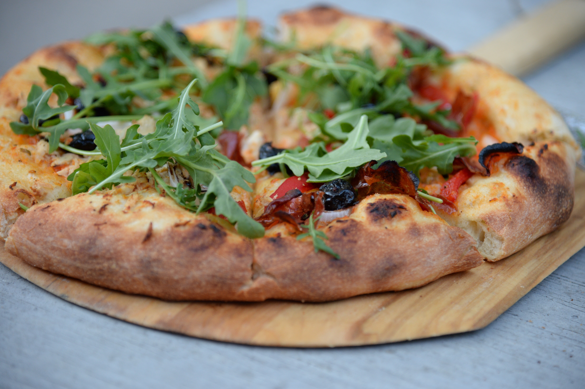
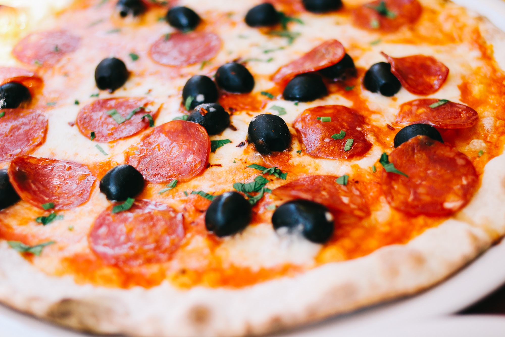
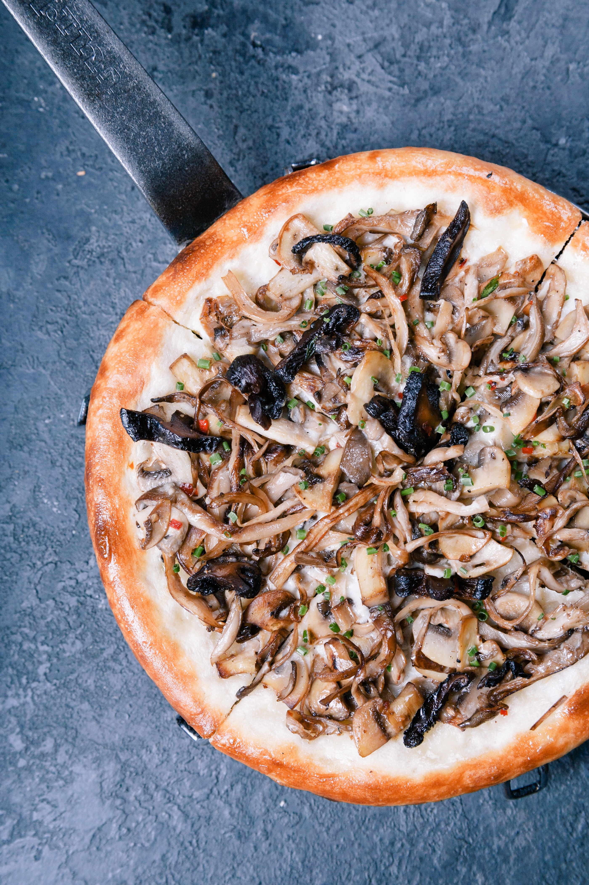

Hello, we're Red Horn! Your new premium pizza delivery service. We
know you're always busy. No time for cooking. So let us take care of
that, we're really good at it, we promise!
Premium Cheese
We only use premium cheese of the highest quality. Taken directly
from Georgia. You can also choose to order more cheese if that's
your style.
Ready in 20 minutes
You're only twenty minutes away from your delicious and super
healthy meals delivered right to your home. We work with the best
chefs in each town to ensure that you're 100% happy.
100% organic
All our vegetables are fresh, organic and local. Animals are raised
without added hormones or antibiotics. Good for your health, the
environment, and it also tastes better!
Order anything
We don't limit your creativity, which means you can order whatever
you feel like. You can also choose from our menu containing over 100
delicious meals. It's up to you!



Our customers can't live without us
It was very quick and simple to order and the people there were nice
and friendly. The food was good even for my mom. The pizza I got was
nice and fresh and tasted heavenly after a long day of work. I would
get pizza from there again.
Alberto Duncan
Love Red Horns pizzas and have never had a bad one. On our way home
from the airport, we stopped in at a Red Horns along the way.
Ordered the large 3 topping pizza, delicious! Looking at the poster
for the Cinnabon rolls, and suffering from jet lag, I added an order
of these delicious looking little rolls. Good idea!
Joana Silva
I was looking for a quick and easy food delivery service in Jakarta.
I tried a lot of them and ended up with Red Horns. Best food
delivery service in the Bay Area. Keep up the great work!
Milton Chapman